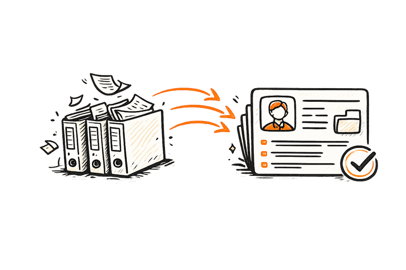

Arbeitsverträge, Personalfragebögen, Bescheinigungen, Änderungsvereinbarungen und Altakten erreichen Personalabteilungen über unterschiedliche Systeme und Eingangswege.
Stapelweise erkennt die Dokumentart, ordnet Unterlagen der richtigen Person und Aktenkategorie zu, liest definierte Angaben aus und gleicht sie mit dem Personalstamm ab. Unklare Zuordnungen, fehlende Seiten und widersprüchliche Daten werden gekennzeichnet und gezielt an die Personalsachbearbeitung weitergegeben.
Ergebnis eines Kundenprojekts. Umfang, Dokumentqualität und Zielsystem bestimmen den Aufwand jedes Projekts.
Vor einem HR-Systemwechsel liegen Personalunterlagen oft über Jahre gewachsen in Papierordnern, Netzlaufwerken und unterschiedlichen Ablagestrukturen.
Die Akten müssen gescannt, in einzelne Dokumente getrennt, benannt, der richtigen Person zugeordnet und in die Kategorien des neuen Systems überführt werden.
Auch nach der Migration kommen weiter Arbeitsverträge, Änderungsvereinbarungen, Personalfragebögen, Bescheinigungen und Zeitnachweise herein.
Stapelweise kann beide Aufgaben übernehmen: die strukturierte Migration historischer Akten und die laufende Verarbeitung neuer Personaldokumente.
direkt in Ihre digitale Personalakte oder Ihr Personalmanagementsystem.
Zu Beginn legen wir gemeinsam fest, welche Dokumentarten verarbeitet, wie sie benannt und welchen Kategorien der digitalen Personalakte sie zugeordnet werden sollen.
Die Konfiguration kann zwischen Altaktenmigration und laufendem Dokumenteneingang unterscheiden.
Dazu können gehören:
Laufende Dokumente gehen über HR-Portale, E-Mail-Postfächer, Hauspost, Scanstrecken oder Schnittstellen ein.
Für eine Migration werden Papierakten oder vorhandene digitale Bestände als Massenscan beziehungsweise Dateiablage übernommen.
Stapelweise führt die Unterlagen in einem gemeinsamen Verarbeitungsschritt zusammen.
Ein eingescannter Personalordner wird in einzelne Dokumente zerlegt. Mehrseitige Arbeitsverträge, Zeugnisse oder Bescheinigungen bleiben zusammen.
Stapelweise erkennt, ob es sich zum Beispiel um einen Arbeitsvertrag, eine Änderungsvereinbarung, einen Qualifikationsnachweis, ein Arbeitszeugnis oder einen Zeitnachweis handelt.
Anschließend liest Stapelweise genau die Angaben aus, die für den jeweiligen HR-Prozess oder die Systemmigration benötigt werden.
Bei Arbeitsverträgen und Änderungsvereinbarungen können das zum Beispiel sein:
Bei weiteren Unterlagen können unter anderem erkannt werden:
Originaldokument und ausgelesene Angaben bleiben miteinander verbunden.
Personalnummern, Namen, Geburtsdaten, Anschriften und weitere eindeutige Angaben werden mit dem vorhandenen Personalstamm abgeglichen. Dokumente mit unklarer Zuordnung werden nicht automatisch abgelegt, sondern zur Prüfung vorgelegt.
Stapelweise trifft keine arbeitsrechtliche oder personalpolitische Entscheidung.
Das System führt formale und regelbasierte Vorprüfungen durch. Dazu können gehören:
Stapelweise kann sichtbare Unterschriften oder Stempel erkennen. Eine rechtliche Prüfung der Wirksamkeit oder Vollständigkeit eines Vertrags ersetzt das nicht.
Lösch- und Aufbewahrungsregeln werden nicht pauschal durch Stapelweise festgelegt. Sie werden aus den von Ihrem Unternehmen freigegebenen Vorgaben übernommen und den Dokumenten als Prüf- oder Löschfrist mitgegeben.
Die ausgelesenen und formal vorgeprüften Angaben werden anschließend in das vereinbarte Datenformat übertragen und zusammen mit dem Originaldokument bereitgestellt.
Je nach Systemlandschaft können die Ergebnisse zum Beispiel übergeben werden an:
Ihre Mitarbeitenden arbeiten weiterhin in den vertrauten Systemen. Stapelweise bereitet die Unterlagen im Hintergrund vor.
Aktenordner werden gescannt, in einzelne Dokumente zerlegt, benannt und der richtigen Person sowie Aktenkategorie zugeordnet.
Uneinheitlich benannte Dateien und bestehende digitale Unterlagen werden klassifiziert und für das neue HR-System aufbereitet.
Arbeitsverträge, Änderungsvereinbarungen, Personalfragebögen und Bescheinigungen werden automatisch zugeordnet und mit den benötigten Angaben bereitgestellt.
Personalfragebogen, Vertrag, Qualifikationsnachweise und weitere Unterlagen werden zu einem vollständigen Vorgang zusammengeführt. Fehlende Dokumente werden sichtbar.
Befristungen, Probezeiten sowie Gültigkeitszeiträume von Erlaubnissen und Nachweisen können aus Dokumenten übernommen und für das Fristenmanagement bereitgestellt werden.
Zeitnachweise, variable Vergütungsangaben und weitere interne Unterlagen können strukturiert an die Lohnabrechnung übergeben werden.
Elektronische Arbeitsunfähigkeitsdaten und Sozialversicherungsmeldungen bleiben in den gesetzlich vorgesehenen elektronischen Meldeverfahren. Stapelweise kann ergänzende Dokumente und Ausnahmen verarbeiten, ersetzt diese Verfahren aber nicht.

Vor einem HR-Systemwechsel lagen die Personalunterlagen des Unternehmens in 250 Papierordnern vor. Die Akten waren über Jahre gewachsen und enthielten unterschiedliche Dokumenttypen, Ablagelogiken und handschriftliche Ergänzungen.
Stapelweise teilte die Scans in einzelne Dokumente auf, erkannte die Dokumentarten und ordnete sie den richtigen Beschäftigten und Aktenkategorien zu. Unsichere oder widersprüchliche Fälle wurden für die manuelle Prüfung markiert.
Innerhalb von sieben Tagen lagen die Unterlagen strukturiert für die Migration in das neue System vor.
Papierakten und uneinheitliche Dateiablagen werden systematisch in die Struktur des neuen HR-Systems überführt.
Dokumentart, Beschäftigte oder Beschäftigter und Aktenkategorie werden automatisch erkannt und abgeglichen.
Fehlende Seiten, unklare Zuordnungen und widersprüchliche Angaben werden sichtbar, bevor Unterlagen in das Zielsystem übernommen werden.
Befristungen und Gültigkeitszeiträume können erkannt und an das Fristenmanagement übergeben werden.
Aktenkategorien, Rollen und Zugriffe können nach Ihren internen Vorgaben getrennt werden.
Dokumente und strukturierte Daten werden an die angebundene Personalakte, das HR-System oder die Lohnabrechnung übergeben.
Stapelweise kann lokal, in einer kundenspezifischen VPC oder als Cloud-Lösung betrieben werden.
Unterlagen liegen bereits getrennt, benannt und der richtigen Person zugeordnet vor. Mitarbeitende prüfen Ausnahmen statt jede Datei einzeln abzulegen.
Aktenbestände werden transparenter. Fristen und unvollständige Vorgänge sind gezielter sichtbar.
Relevante interne Unterlagen können strukturiert vorbereitet und an das Abrechnungssystem übergeben werden.
Bescheinigungen und Vertragsunterlagen sind schneller auffindbar, sofern die anfragende Person zugriffsberechtigt ist.
Betriebsmodell, Rollen, Aktenkategorien, Protokollierung und Speicherorte können an die eigenen Anforderungen angepasst werden.
Stapelweise bereitet Altdaten für Migrationen vor und bindet den laufenden Dokumenteneingang an bestehende Systeme an.
Stapelweise kann Altbestände erschließen und anschließend neue Personaldokumente laufend verarbeiten.
Unklare Zuordnungen und unsichere Werte werden gekennzeichnet. Die Verantwortung bleibt bei den zuständigen Mitarbeitenden.
Dokumente werden nicht nur durchsuchbar, sondern nach Ihrer Aktenstruktur geordnet.
Jede ausgelesene Angabe kann zum zugrunde liegenden Dokument zurückverfolgt werden.
Die Ergebnisse können direkt in die angebundenen HR-Systeme übertragen werden.
Stapelweise steht in drei Betriebsvarianten zur Verfügung.
Die Verarbeitung findet innerhalb Ihrer eigenen technischen Umgebung statt. Dokumente und Inhaltsdaten verlassen Ihr Netzwerk nicht.
Die Verarbeitung findet in einer isolierten, für Sie eingerichteten Cloud-Umgebung statt. Dokumente und Inhaltsdaten werden nicht außerhalb dieser Betriebsumgebung übertragen.
Stapelweise kann auch als verwaltete Cloud-Lösung betrieben werden. Speicherorte, Zugriffe und Auftragsverarbeitung werden vertraglich festgelegt.
Unabhängig vom gewählten Modell können Zugriffsrechte, Protokollierung, Speicher- und Löschregeln sowie Schnittstellen an Ihre Anforderungen angepasst werden.
Testen Sie Stapelweise mit einem typischen Arbeitsvertrag, Personalfragebogen oder einem Ausschnitt aus einer Altakte. Gemeinsam prüfen wir, welche Angaben zuverlässig erkannt werden, welche Aktenstruktur benötigt wird und wie die Übergabe an Ihr HR-System aussehen kann.
Stapelweise an konkreten Beispielen erleben und testen
Was kann Stapelweise für Sie tun? Vereinbaren Sie ein persönliches Gespräch mit uns.